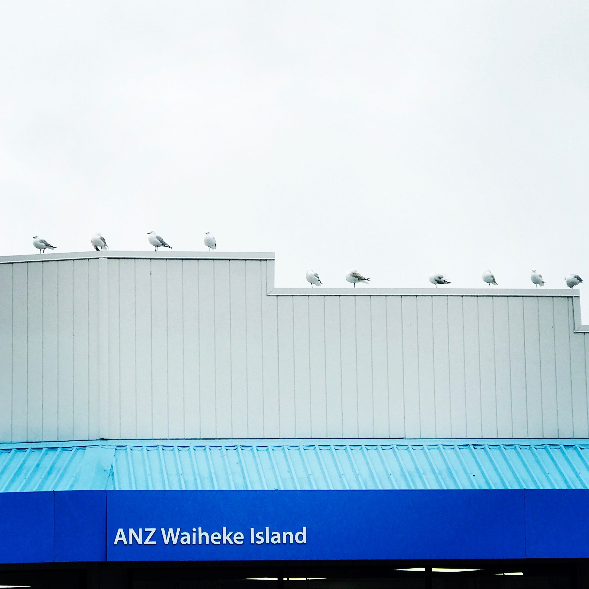

ANZ Stock Market 2018-2020

Project information
- Category: Regression
- Project date: 10 June, 2020
- Project URL: GitHub Page
Description: In this project, I collected the ANZ Stock dataset on Yahoo.com from June 18th 2018 to June 18th 2020 (which is the date that I started doing this project). I applied Machine Learning as well as Data Analysing into this project. As a way for me to learn deeper about Stock and Economics.
Technique: Pandas, Numpy, Google Colab, Scikit Learn, Matplotlib